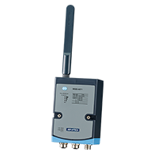

NB-IoT / LTE-M
Model No.
Model Name
Function
Features
Benefit
Link

ICR-3211B
ICR-3211B
Networking
- Industrial IoT LTE Cat.M1 & NB-IoT router & gateway
- 2× Ethernet 10/100, 1x RS232, 1x RS485 and I/O
- 2× SIM with cover, eSIM ready
- Wide operating temperature range from -40 °C to +75 °C
- The last-gasp supercapacitor ensures safe sending out of information
- about power failure or last processed data
- Powerful CPU with 1.3 GB storage to host customer SW applications
- Supports VPN tunnel creation using various protocols
- Open Linux platform (Node-Red, Python, C/C++)

WISE-4671
Advanced industrial Cat. NB1/Cat. M1 Wireless Module
Networking
- Global coverage of Cat. NB1 and Cat. M1 frequency bands
- Supports MQTT, CoAP & LwM2M protocol.
- Supports global coverage of Cat. M1 frequency bands.
- Supports direct cloud service for IoT integration
- GPS/Galileo/BeiDou/GLONASS supported
- Real-time monitoring
- Low power consumption
- Long distance transmission
- Wide signal coverage
- Easy deployment and maintenance

WISE-4471
Industrial Cat. NB1/Cat. M1 Wireless Module
Data Collection
- Global coverage of Cat. NB1 and Cat. M1 frequency bands
- Supports MQTT, CoAP & LwM2M protocol.
- Supports global coverage of Cat. M1 frequency bands.
- Supports direct cloud service for IoT integration
- IP65 protection (option)
- Real-time monitoring
- Low power consumption
- Long distance transmission
- Wide signal coverage
- Easy deployment and maintenance

-WISE-4773-S51U
-Intelligent Cellular LTE OBD Data Interface
-Data Collection
- Cellular LTE CAT-M1/NBIOT
- OBD J1939 & J1708/J1587
- GPS support
- Proprietary OBD database and algorithms
- Self-orienting 3-axis accelerometer
- Low power, real-time, global cellular networking
- Retrieve, translate, analyze data from vehicle's onboard diagnostics bus
- GPS location, speed, altitude, direction tracking for fuel efficiency
- Industry-leading make-model-year vehicle coverage (NATAM)
- Fleet managers and TSPs can monitor driver acceleration, braking, cornering